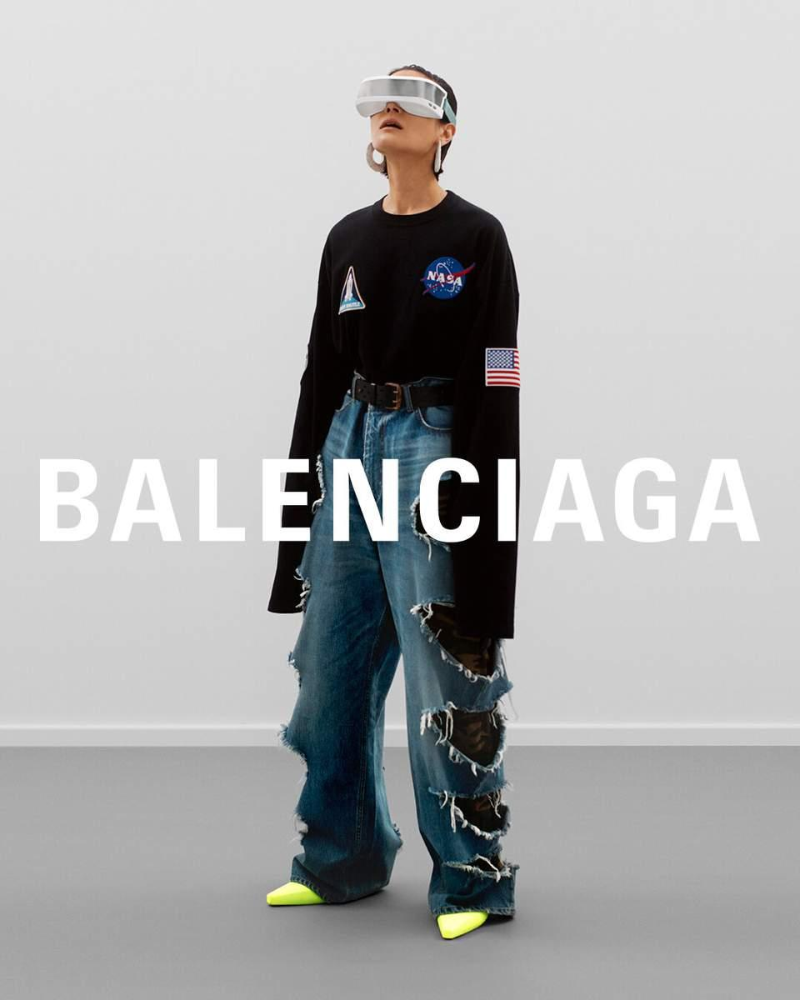
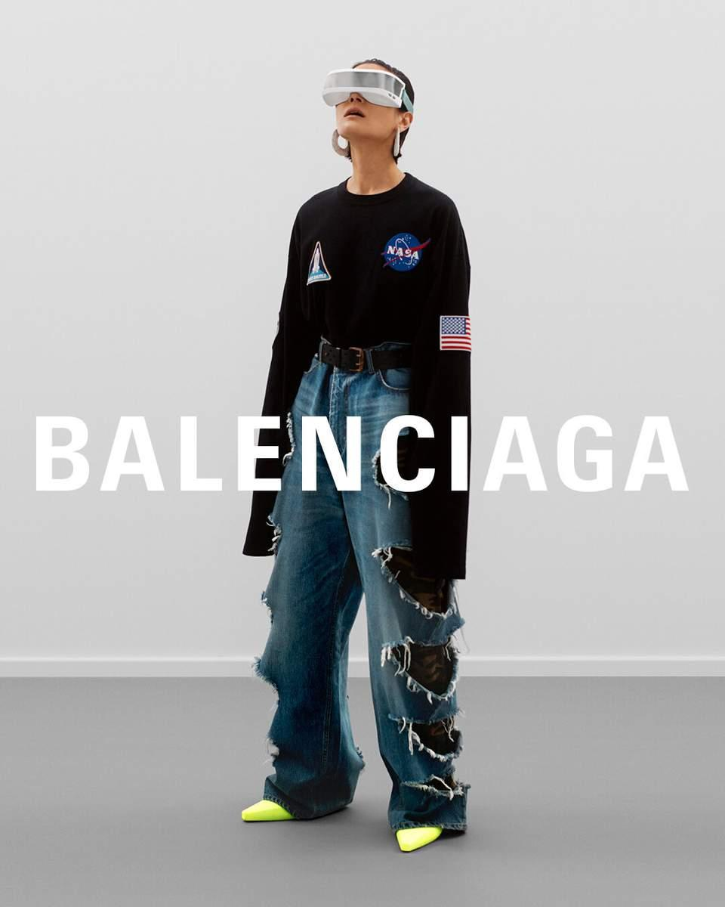
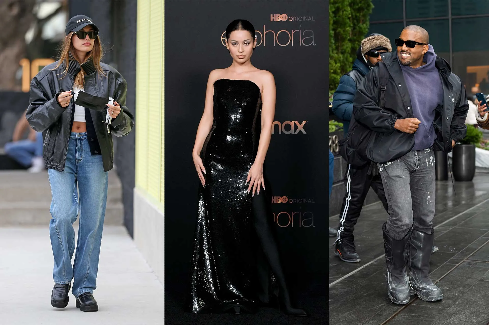
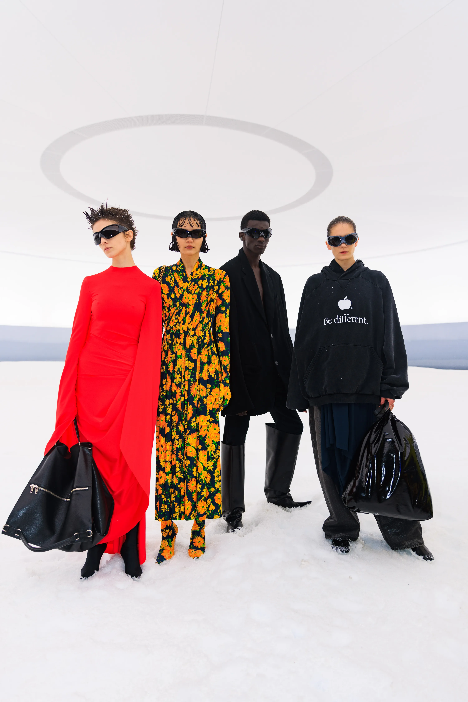

REDEFINIENDO EL MARKETING DE MODA
Balenciaga, bajo la dirección de Demna Gvasalia, ha implementado un enfoque de marketing disruptivo que ha redefinido su imagen y ha capturado la atención del público contemporáneo. Esta estrategia se basa en la provocación, la ironía y la conexión con las tendencias digitales, lo que ha permitido a la marca destacar en un mercado saturado.
UGLY FASHION COMO CONCEPTO CENTRAL
Estética Provocativa: Bajo la dirección de Demna Gvasalia, Balenciaga ha marcado un hito en la moda contemporánea al desafiar las normas estéticas tradicionales y popularizar lo que se conoce como el "Ugly Fashion" o moda fea. Esta nueva forma de entender la belleza en la moda juega con la provocación, el desequilibrio visual y el uso de elementos aparentemente comunes o "ordinarios", transformándolos en piezas de lujo y símbolos de estatus. A través de esta estética, Gvasalia no solo desafía las normas, sino que también redefine lo que es deseable en el contexto actual de la moda.
.jpg) 

Viralidad y Buzz Marketing: El enfoque de marketing de Balenciaga bajo Gvasalia no solo se ha basado en crear productos llamativos, sino en hacer que estos se conviertan en fenómenos virales que generen conversación a través de las redes sociales y el buzz marketing. Esta estrategia se ha convertido en una de las herramientas más poderosas de la marca para conectar con una audiencia global y joven, ansiosa por discutir y compartir lo último en moda. Una de las técnicas más efectivas utilizadas por Balenciaga ha sido el meme-baiting: la creación de productos que están diseñados específicamente para generar memes, bromas y comentarios en las redes sociales. Al introducir elementos provocativos y visualmente impactantes, Gvasalia ha logrado que los productos de Balenciaga se conviertan en temas de discusión y debate en plataformas como Instagram, Twitter, y TikTok. Este enfoque crea una viralidad orgánica donde los consumidores se convierten en los principales defensores y promotores de la marca.
USO DE REDES SOCIALES Y CELEBRIDADES
Presencia Digital: En la era digital, Balenciaga ha logrado sobresalir al aprovechar de manera efectiva las plataformas sociales como Instagram y Twitter para amplificar su mensaje y conectar con audiencias globales. Gvasalia, consciente de la importancia de las redes sociales en la moda contemporánea, ha implementado una estrategia digital que no solo muestra las colecciones, sino que también crea una narrativa visual que resuena con los valores y el estilo de vida de los consumidores modernos. Con más de 12 millones de seguidores en Instagram, Balenciaga ha establecido una presencia de marca que trasciende lo meramente comercial. La plataforma se ha convertido en un escaparate visual donde la estética de la marca, sus productos y campañas publicitarias se presentan de forma estratégica para generar interacción y engagement. Sin embargo, no solo se trata de mostrar colecciones, sino de crear una atmósfera digital que hable directamente a los valores y gustos de una generación de consumidores conectados. Los usuarios interactúan con el contenido no solo a través de likes y comentarios, sino participando activamente en la creación de contenido, como memes y posts virales.
Colaboraciones con Celebridades: La participación de figuras públicas como Kim Kardashian y Justin Bieber ha sido crucial. Estas colaboraciones no solo aumentan la visibilidad de la marca, sino que también crean una narrativa que conecta emocionalmente con los consumidores. Una de las figuras clave que ha fortalecido la relación de Balenciaga con el público más joven y millennial es Kim Kardashian, quien no solo es una personalidad mediática, sino también una figura influyente en el mundo de la moda. A través de su participación en campañas de Balenciaga, Kardashian ha ayudado a humanizar la marca, llevándola a un público más amplio y diverso.
INNOVACIÓN EN PRESENTACIONES Y COLABORACIONES
Desfiles Impactantes: Gvasalia ha transformado los desfiles de moda en eventos espectaculares y provocativos,
 utilizando elementos visuales que generan conversación. Por ejemplo, su colección Fall Winter 2022 incluyó
referencias a conflictos actuales, lo que subrayó su enfoque audaz.Uno de los desfiles más comentados de la era Gvasalia
fue el de la colección Fall/Winter 2022, que se destacó por su puesta en escena provocadora y su uso de referencias a
conflictos actuales. Durante esta presentación, Balenciaga no solo exhibió sus nuevos diseños, sino que también utilizó el
evento para hacer un comentario social sobre el estado del mundo. Los modelos desfilaron por una pasarela plagada de imágenes
y símbolos relacionados con temas candentes, como el conflicto en Ucrania. Esta alusión a la crisis global no fue solo una mera
representación visual, sino un claro mensaje de solidaridad y conciencia social, todo dentro del marco de un evento de alta costura.
utilizando elementos visuales que generan conversación. Por ejemplo, su colección Fall Winter 2022 incluyó
referencias a conflictos actuales, lo que subrayó su enfoque audaz.Uno de los desfiles más comentados de la era Gvasalia
fue el de la colección Fall/Winter 2022, que se destacó por su puesta en escena provocadora y su uso de referencias a
conflictos actuales. Durante esta presentación, Balenciaga no solo exhibió sus nuevos diseños, sino que también utilizó el
evento para hacer un comentario social sobre el estado del mundo. Los modelos desfilaron por una pasarela plagada de imágenes
y símbolos relacionados con temas candentes, como el conflicto en Ucrania. Esta alusión a la crisis global no fue solo una mera
representación visual, sino un claro mensaje de solidaridad y conciencia social, todo dentro del marco de un evento de alta costura.
Exploración del Metaverso: Balenciaga fue pionera al asociarse con Epic Games para lanzar productos digitales en Fortnite, lo que refleja su adaptación a las nuevas tendencias del consumo digital y su deseo de conectar con una audiencia más joven. La asociación de Balenciaga con Fortnite fue un paso audaz que reflejó el deseo de la marca de conectar con una audiencia más joven y digitalmente inmersa. Los jugadores de Fortnite pudieron adquirir ropa virtual inspirada en las últimas colecciones de Balenciaga, creando así una conexión directa entre el universo de los videojuegos y la alta costura.